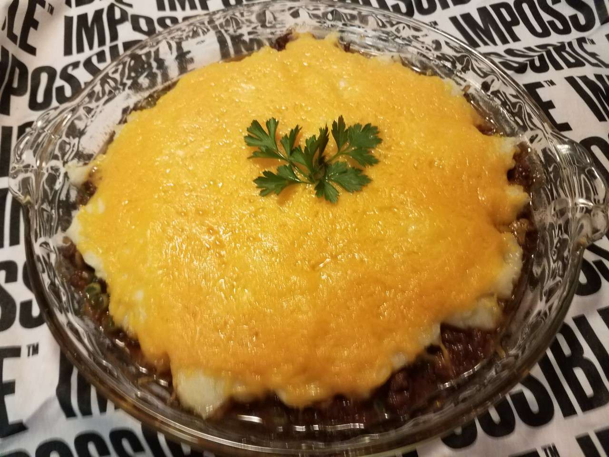

Impossible Shepherd's Pie

Description
Impossible ground meatless burger is easily whipped up into a comforting shepherd's pie that is sure to please the whole family!
Ingredients
- 4 tablespoons salted butter, divided
- 1 (12 ounce) package Impossible Burger
- 2 medium shallots, chopped
- 2 cloves garlic, chopped
- 1 cup frozen peas and carrots, thawed
- 8 ounces brown gravy
- 1 tablespoon Worcestershire sauce
- salt and ground black pepper to taste
- 2 cups mashed potatoes
- 1 cup shredded sharp Cheddar cheese
- 1 tablespoon chopped fresh parsley
Steps
- Preheat the oven to 375 degrees F (190 degrees C).
- Heat 1 tablespoon butter in a 10-inch skillet over medium to medium-high heat. Cook and stir the meatless ground beef with shallots and garlic until browned and crumbly and shallots are soft, about 10 minutes. Add peas and carrots, gravy, Worcestershire sauce, salt, and pepper. Saute for 5 minutes.
- Spread the mixture onto the bottom of a 10-inch round baking dish. Spread mashed potatoes evenly over the top. Sprinkle with Cheddar cheese and dot with remaining butter.
- Bake in the center of the preheated oven until the cheese and butter have fully melted, about 20 minutes. Top with parsley and serve.
- Enjoy!